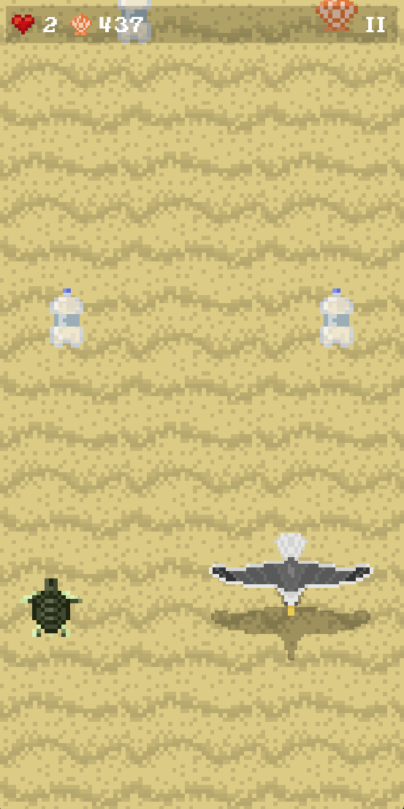
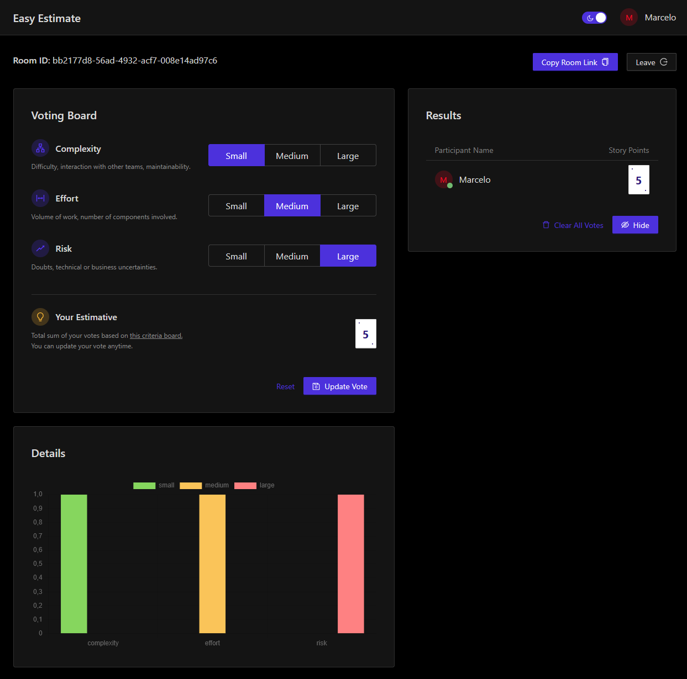
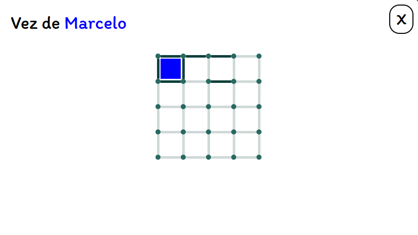

AUG 2025 — NOW
Software Engineer
Getnet
Building software in a large-scale payments environment.
15+ years curious about programming.
8+ years building software professionally.
$ cat profile.txt
software engineer
front-end / back-end / mobile
always open to a new challenge
$
I've been interested in programming for 15+ years, and I've been working professionally with software for 8+ years.
Along the way, I've worked across different parts of the stack: front-end applications with Angular and React, back-end systems with Java and Spring Boot, Node.js and .NET, plus some Android development.
I enjoy understanding how things work, building useful solutions and learning whatever technology a problem demands. I'm comfortable with what I already know — but I don't say no to a different challenge.
Building software in a large-scale payments environment.
Software development working with Getnet / PagoNxt Merchant Solutions.
Software development in Porto Alegre.
Development across front-end and back-end applications.
Where the professional chapter of my technology journey started.
Angular · React
Java · Spring Boot · Node.js · .NET
Android
Curiosity · problem solving · new challenges

An Infinity Runner made with Unity. A sea turtle tries to survive pollution and predators in a hostile ocean.

A planning tool that helps choose an estimate based on three factors, turning a subjective decision into a simple visual process.

An online version of the classic dots game, built with React and Socket.IO for real-time interaction.